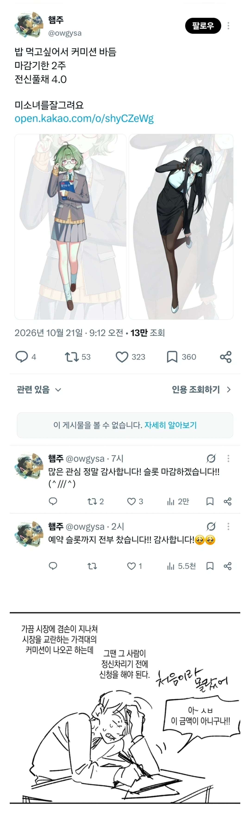

원래는 얼마나 하는데? 그리고 저런걸 왜 돈주고 사는거야
수십만
자캐딸도 있고 웹소나 소규모게임 제작 등에 많이 씀
웹소나 게임쪽에 쓸때는 보통 커미션이라 안하고 외주라고 따로 구별해서 부름
저런 커미션은 저작물 2차사용권리 미포함으로 그냥 짤만 사는거고
외주는 그 짤을 웹소일러나 게임일러등으로 사용할 권리를 포함해서 사는거라 단가가 훨씬 비쌈
잘모르고 커미션으로 산걸 그대로 상업적으로 사용했다가 큰일나는 수가 잇음
지식이 늘었다
풀샷인데다 저정도 채색 퀄리티면 적어도 10만은 넘지
포스터같은걸 사도 10만원이면 여러장 살텐데 왜 저런식으로 그림을 받는거임?
본인이 원하는 캐릭터와 구도의 짤을 만들어서 덕질을 하고는 싶은데 똥손이라 그 욕구가 해소가 안되는 애들이 소비층이라 생각하면 됨
커미션 의뢰자 말고는 수요가 없는 맞춤 제작을 원하는 비용이니까 비싸게 받고 비싸게 사는 시장이 형성되는거
온리원 주문제작 상품
맞춤제작이라 비쌀수밖에없지. 포스터는 걍 정해진 그림을 사는거고 저런 커미션은 자기만의 캐릭을 원하는 포즈로 요청할 수 있으니까. 가령 온라인 게임 자캐라던가 그런건 포스터로는 얻을 방법이 없잖음?
커미션이라는게 간단히 말해서 내가 원하는 그림이나 만화를 원하는 작가한테 그려달라고 하는거임.
좋아하는 캐릭터 그림을 어떤 그림체의 사람이 그린걸 보고 싶은데 그 사람이 관심없어서 안 그리면 돈이라도 줘서 보고싶다 할때 쓰는거임.
가격은 채색여부 얼굴만 그리는지 상반신 그리는지 다 그리는지 배경도 그리는지 등등 조건 따라 다름.
보통은 할게 많아지면 비싸지는데 전신 풀 채색이면 꽤 시간 오래걸려서 보통 10만 이상씩은 받음.
근데 이것도 실력없고 이름 없으면 가격 훅훅 깍이긴함.
난 갑자기 러브라이브 태블릿 배경화면 원해서 커미션해봄 만족함
나도 잘은 모르는데 일단 개인용이냐 상업용이냐에 따라 가격이 다르고
크게 두상 반신 전신으로 또 다르고
실력에 따라 몇만원에서 수십만원 갈리는듯
보통은 10만 언저리고
내가 판매용으로 상업이용ok하고 그림을 구매한적이 있음.
제작비 30 +@ 들었어.
그림이라는게
애매하게(진짜 잘그리는 사람 대비) 잘그림->오래걸림
잘그리는 사람이 적당한 퀄로 빠르게 그림->기본 단가가 비쌈
이거라 저정도 퀄이면 6~10시간 노동은 쳐줘야 해서...
막짤 재밌네
AI그림이 흥하고 욕하는데 이유가 있구나
나도 부업할까 해서 크몽 올렸다가
퇴근하고 존내힘들어서 그냥 관둠
단가가 안맞아…
저러니 Ai가 괜히 흥하는게 아님
아냐, 저바닥은 구매자도 AI그림 싫어서 주문하는거야. AI그림 쓰면 개까임
그게 진성들이나 그런거지 결국 돈없고 저기에 쓰는게 힘든사람들이 AI에 눈을 돌릴 수밖에 없지
이제 저기도 소수만남겠지 점점 저돈 받고도 찐빠내는 새끼들이 존재하니까
극한의 장인정신으로 큰 돈을 만질 수 있지만 결국 시장축소는 예견되는일이긴 하다는 것
AI 딸깍하고 리터칭 하는 애들도 커미션 열때 있음
20장 5딸라 뭐 이런 식임
Ai가 싫어서 커미션 의뢰하는거같은데
커미션 진짜 존나게 비싸더라 괜히 AI가 그림그리는거에 발작하는거 아니더라고
경쟁도 경쟁이지만 작가가 수년간 갈고닦아온 그림이 '딸깍'한번으로 같은 선상에서 평가되는것도 있으니까..
엄연한 피해자인데 발작이라는 단어는 좀 아닌듯
말이 과격하긴 했는데 커미션 비용 자체가 싼건 절대 아니었던 영역이니까 그냥 업보라는거임
피해자라는 말은 그림 스타일 도둑맞은 작가들이나 그런거 같고, 자격없는 사람들이 더 많은데
나도 곧 대체되게 생긴 개발직군인데 피해자는 아니잖음 그냥 도태되는거지
커미션 세계는 이상하더라 우리 조카가 유치원 다닐때 수준 그림으로 몇만원씩 받는 사람도 있고